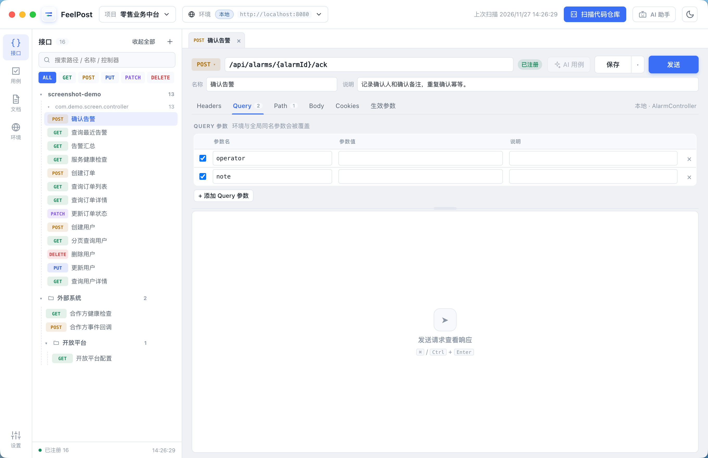
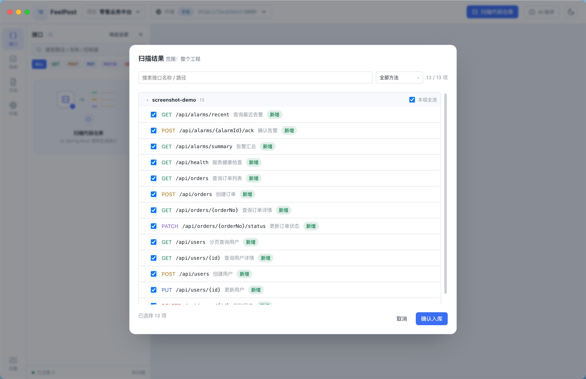
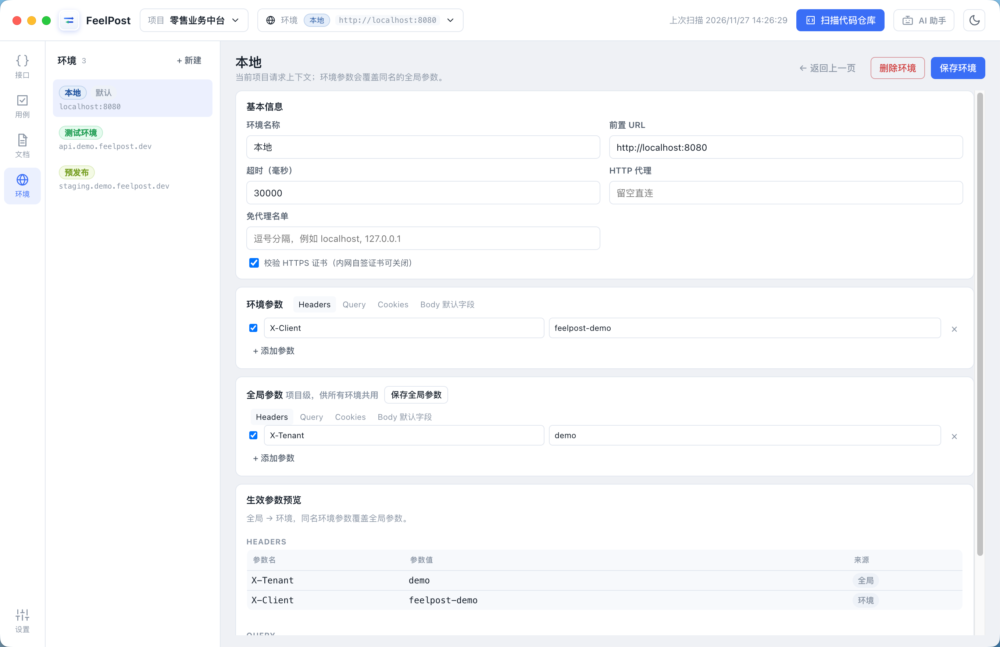
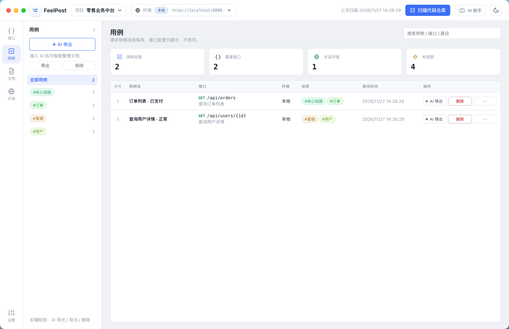
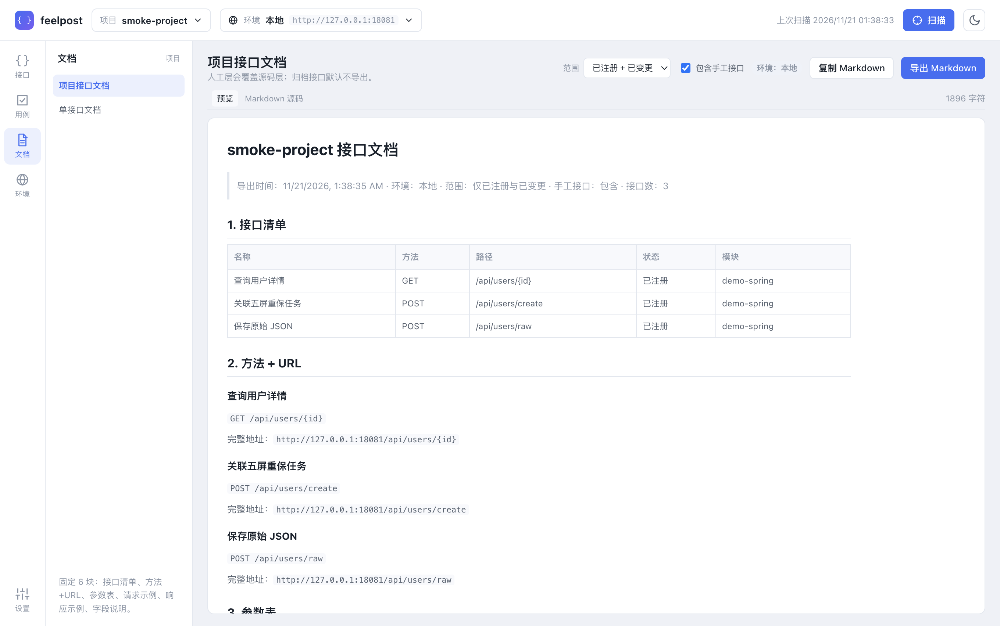
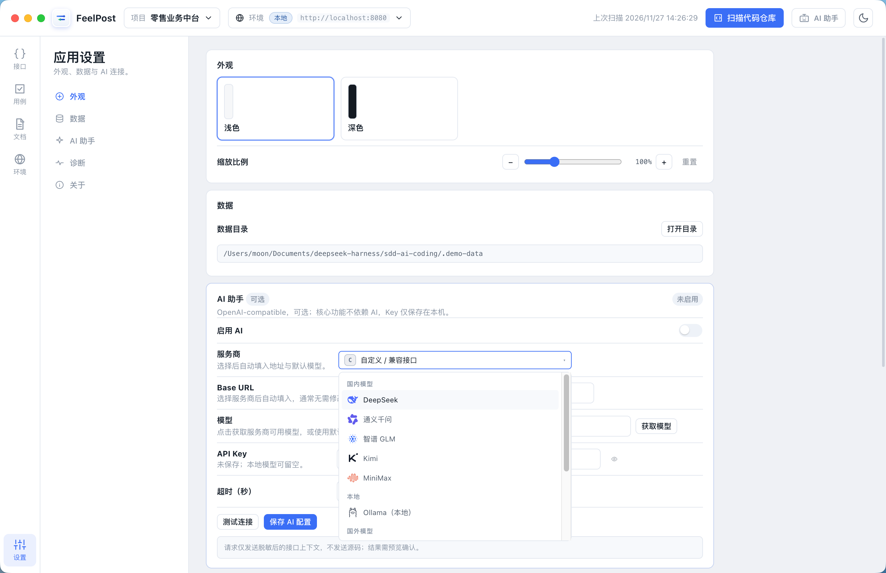

FeelPost 文档
从本地 Spring Boot 源码到前端可直接使用的契约。这里记录每个版本的变化，以及 FeelPost 已经具备的完整能力。
最后更新：2026-11-27 · 当前版本：v0.1.0
更新日志
所有版本变化按时间倒序排列。
这是 FeelPost 的第一个可用版本，围绕「本地源码扫描 → 调试 → 用例 → 文档交付」建立了完整闭环。
新增
- 本地 Spring Boot 源码扫描：Controller、路径、方法、参数、DTO、Javadoc、校验注解；
- 扫描任务使用独立
worker_threads，支持进度、取消、候选 diff 与入库； - 接口资产树、模块 / 包 / 手工目录、搜索、方法筛选、人工校正；
- 环境、全局参数、TLS、代理、超时与生效参数预览；
- HTTP 请求调试：Headers / Query / Path / Body / Cookies、响应示例、JSON 简化、请求取消；
- 用例快照、标签、搜索、详情、复制、删除、按标签批量删除；
- Markdown 文档：项目接口文档、单接口导出、筛选、复制、导出、渐进加载；
- 字段说明：请求体与响应 JSON 字段路径、类型、示例、手工说明；
- AI 字段说明：OpenAI-compatible、流式生成、Diff 应用、失败重试；
- AI 用例：场景选择、候选预览、标签编辑、导入当前环境；
- AI 用例文档：按接口分批、上下文超限拆分、单个 Markdown 合并、缓存复用、失败批次重试；
- AI 服务商预设：DeepSeek、通义千问、智谱 GLM、Kimi、MiniMax、Ollama、OpenAI、Anthropic Claude、Google Gemini、OpenRouter；
- 模型列表获取：通过兼容
/models接口拉取并选择； - AI 设置页状态校验、API Key 安全存储、连接测试失败重试；
- macOS DMG / ZIP、Windows NSIS / Portable 打包配置与 GitHub Actions 构建；
- 应用内 Message 提示、统一设置侧栏、接口 Tab 右键关闭、目录快捷操作。
调整
- 产品展示名统一为 FeelPost，技术标识保持
feelpost； - 用例导出必须以标签为范围，AI 导出与普通导出并存；
- 文档页 AI 接入文档入口下线，统一使用「用例 → AI 导出」；
- 设置页采用与文档 / 环境一致的白色侧栏；
- 新建 HTTP 直接打开请求面板，不再经过额外表单。
修复
- AI 测试连接偶发误报失败：HTTP 2xx 即视为连接成功；
- 响应示例变化后 AI 缓存正确失效；
- 请求方式 / 路径保存后接口 Tab 与左侧菜单同步更新；
- 加载计时固定宽度显示，避免页面晃动；
- 模型与服务商切换后连接验证状态正确失效；
- 修复 Windows CI 非法文件名；
- 修复 GitHub Actions 自动发布缺少 Token 的问题。
产品概览
FeelPost 是一个运行在本机的桌面工具，用来把 Spring Boot 后端接口从源码整理成前端可以直接使用的契约文档。它不依赖云端服务，项目、接口、环境、用例和响应示例都保存在本地。
AI 是可选项。不开启 AI，也能完成扫描、调试、用例和普通 Markdown 导出；需要时再接入 OpenAI-compatible 服务商。

核心功能
v0.1.0 已覆盖从源码发现到前端交付的完整链路。
源码扫描
解析 Spring Boot Controller、方法、路径、参数、DTO、Javadoc 与校验注解。
接口资产
模块 / 包 / 手工目录组织，支持搜索、方法筛选、候选确认和人工校正。
本地调试
按环境发送请求，编辑 Path、Query、Header、Body、Cookie，查看响应与耗时。
用例沉淀
冻结请求快照、响应示例、标签与备注，支持复用和交接。
文档导出
项目接口文档与单接口 Markdown，支持筛选、复制、导出和渐进加载。
AI 可选协作
字段说明 Diff、候选用例、分批判量文档；API Key 仅保存在本机。
使用流程
- 新建项目：选择本地 Spring Boot 源码目录。
- 扫描代码：确认 Controller 候选，逐项处理 diff 后入库。
- 配置环境：设置前置 URL、全局参数、TLS、代理与超时。
- 调试接口：编辑参数，发送请求，查看响应、耗时和大小。
- 保存用例：冻结请求快照，补充标签、备注和响应示例。
- 导出交付：生成 Markdown；需要时按标签交给 AI 整理。
源码扫描
扫描只读取源码文件，不执行源码。解析过程在独立 worker_threads 中运行，主进程负责进度、取消和结果入库。
- 识别 Controller 类、请求方法、路径、参数和返回类型；
- 解析 DTO、Javadoc、校验注解和嵌套字段；
- 扫描结果以候选 diff 呈现，确认后才进入资产目录；
- 人工修改会保留，不会在下次扫描中被静默覆盖。

接口资产
接口按模块、包和手工目录组织。除了源码扫描，也可以创建手工接口，适合网关、外部服务或还没写进 Spring Boot 的接口。
- 接口树、搜索、方法筛选和目录快捷操作；
- 接口详情、请求方式 / 路径编辑、标签和备注；
- 候选变更逐项确认，人工校正层与扫描结果分开保存；
- 接口 Tab 支持右键关闭，适合同时打开多个接口。
环境与调试
环境管理
每个项目可以配置多套环境。环境支持前置 URL、全局参数、TLS、代理和超时，并提供参数合并后的生效预览。
请求面板
支持 Path、Query、Header、Body、Cookie 编辑和请求取消。响应区展示状态码、耗时、大小、响应头与响应体，并可保存为响应示例。

用例管理
把一次调通的结果冻结成用例，保留请求快照、响应示例、标签和备注。用例是后续导出和 AI 整理的输入。
- 按接口、标签和关键字检索；
- 用例详情支持复制、删除和按标签批量删除；
- 响应示例变化时，相关 AI 缓存会失效；
- 普通导出和 AI 导出均以标签作为范围。

文档导出
文档页按接口生成 Markdown，可选择接口范围、预览、查看源码、复制或导出。接口较多时采用渐进加载，避免一次性渲染全部内容。
- 项目接口文档与单接口导出；
- 按模块 / 标签筛选，支持搜索；
- 字段说明包含请求体、响应 JSON 的字段路径、类型、示例和手工说明；
- AI 用例文档可以按接口分批，多个 Markdown 合并导出。

AI 协作（可选）
FeelPost 使用 OpenAI-compatible 接口，支持 DeepSeek、通义千问、智谱 GLM、Kimi、MiniMax、Ollama、OpenAI、Anthropic Claude、Google Gemini、OpenRouter 和自定义兼容接口。
- 字段说明：流式生成请求 / 响应字段说明，先展示 Diff，再选择性应用；
- AI 用例：根据接口契约生成候选用例，预览、调整标签后导入当前环境；
- AI 用例文档：按接口分批、上下文超限拆分、缓存复用、失败批次重试；
- 安全：API Key 使用系统安全存储，只保存在本机；发送前剔除敏感 Header、Cookie 和查询参数；
- 默认关闭：不配置 AI 不影响扫描、调试、用例和普通 Markdown 导出。

本地数据与隐私
默认数据目录为 ~/Documents/feelpost，可以通过 FEELPOST_DATA_DIR 环境变量覆盖。数据全部是本地 JSON 文件，可以直接备份或迁移。
- 无账号系统、云同步或远程遥测；
- 项目、接口、环境、用例、响应示例均保存在本机；
- 扫描只读取源码，不执行源码；
- AI 是可选能力，配置和 Key 不离开本机。
下载安装
从 GitHub Releases 下载对应平台安装包：
- macOS：
.dmg（Apple Silicon / Intel）； - Windows：NSIS 安装包
.exe； - Windows Portable：免安装
.exe。
当前安装包未做代码签名，首次运行可能被系统提示。正式分发前需要补充签名和公证。
从源码运行
git clone https://github.com/smileemile/feelpost.git
cd feelpost
npm install
npm run dev需要 Node.js 20 或更高版本，支持 macOS 和 Windows。构建命令：
npm run dist:mac:arm64 # macOS .dmg
npm run dist:win # Windows .exe常见问题
使用 FeelPost 必须联网吗？
不需要。扫描、调试、用例和普通 Markdown 导出都在本地完成。只有主动使用 AI 功能时，才需要连接你配置的模型服务商。
扫描会修改我的 Spring Boot 源码吗？
不会。扫描只读取源码文件，不执行源码，也不会写回项目目录。
可以管理没有源码的接口吗？
可以。接口资产支持手工接口，适合网关、外部服务或尚未写入 Spring Boot 的接口。
数据保存在哪里？
默认在 ~/Documents/feelpost，可以通过 FEELPOST_DATA_DIR 修改。所有数据都是本地 JSON 文件。
安装包为什么提示“未签名”？
当前 v0.1.0 是内部 Alpha 版本，尚未完成 macOS 公证和 Windows 代码签名。首次运行需要按系统提示确认。
如何反馈问题？
到 GitHub Issues 提交问题，或直接发起 PR。文档也会随版本持续更新。